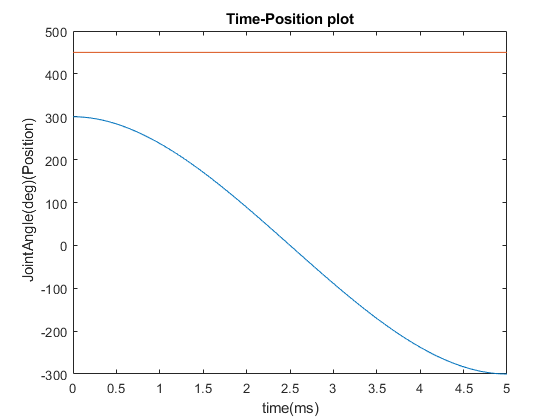
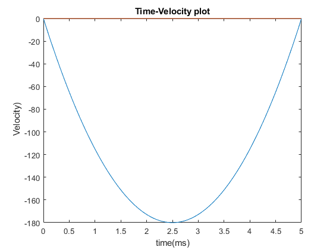
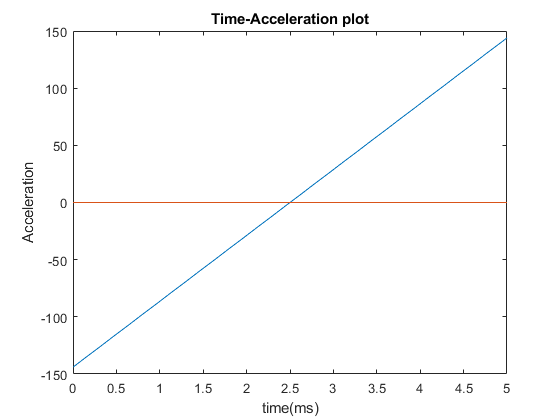
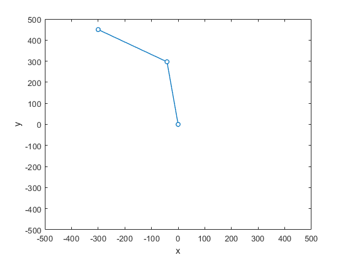

Contents
- QUESTION 2
- Calculating Trajectory
- plots
- Plot-1 Time-Position
- Plot-2 Time-Velocity
- Plot-3 Time-Acceleration
- Inverse Kinematics
- plotting the resultant end-effector path/trajectory i.e.track the position of the end-effector (task space) within the motion.
- Fk function
- Cubic Function
- IK function
- QUESTION3
- Question3 a
- Question 3 b
- Question 3 C
QUESTION 2
clear all; close all; clc; % Cubic Polynomial Trajectory for 3 Link arm % Given initial position of x2 =(300,450) at t= 0 and Final Position of x2= % (-300,450) at t= 5 % l1=l2=300 % given velocities are zero % qi = initial position % vi = initial velocity % qf = final position % vf = final velocity % ti = initial time % tf = final time % qd = position trajectory % vd = velocity trajctory % ad = acceleration trajectory
Calculating Trajectory
Here, i have given the positions in the trajectory function and got the desired straight line trajectory in elbow up and down configurations
vi1 = 0; vi2 = 0; vf1 = 0; vf2 = 0; qi1 = 300; qf1 = -300; qi2 = 450; qf2 = 450; d1 = [qi1,qf1,vi1,vf1,0,5]; [qd1,vd1,ad1] = cubic(d1(1),d1(2),d1(3),d1(4),d1(5),d1(6)); d2 = [qi2,qf2,vi2,vf2,0,5]; [qd2,vd2,ad2] = cubic(d2(1),d2(2),d2(3),d2(4),d2(5),d2(6));
plots
t = linspace(0,5,100*5); % to get the plots in joint space we have to multiply the qd,vd and ad with % jacobian inverse % syms t1 t2 % l1 = 300; % l2 = 300; % % % x1 =[l1*cosd(t1); % l1*sind(t1);] % x2 = [l1*cosd(t1) + l2*cosd(t1+t2); % l1*sind(t1) + l2*sind(t1+t2);] % J2 = simplify([diff(x2,t1),diff(x2,t2)]) % % % J=[J1;J2] % Ji = pinv(J2) % q = [qd1;qd2]*Ji; % v = [vd1;vd2]*Ji; % a = [ad1;ad2]*Ji;
Plot-1 Time-Position
q = [qd1;qd2]; figure plot(t,q); xlabel('time(ms)'); ylabel(' JointAngle(deg)(Position)'); title('Time-Position plot');
Plot-2 Time-Velocity
v = [vd1;vd2]; figure plot(t,v); xlabel('time(ms)'); ylabel(' Velocity)'); title('Time-Velocity plot');
Plot-3 Time-Acceleration
a = [ad1;ad2]; figure plot(t,a); xlabel('time(ms)'); ylabel('Acceleration'); title('Time-Acceleration plot');
Inverse Kinematics
getting the joint angles from the positions of the desired trajectory
t1 = zeros(100,1); t2 = zeros(100,1); for i = 1:500 [t1(i),t2(i)] = Inv_Kin(qd1(i),qd2(i),300,300); end % plot(qd1,qd2,t1,t2) figure % plot(qd2,t2)
plotting the resultant end-effector path/trajectory i.e.track the position of the end-effector (task space) within the motion.
[x1,x2,y1,y2] =Forward_Kinematics(t1,t2,300,300); Link1=[zeros(size(x1)) x1 y1]; Link2=[zeros(size(x2)) x2 y2]; for i = 1:5:500 plot([Link1(i,:)],[Link2(i,:)],'-o','LineWidth',1,'MarkerSize',5,'MarkerFaceColor',[1 1 1]); xlabel('x'); ylabel('y'); axis([-500 500 -500 500]) pause (0.01); end
Fk function
function [x1,y1,x2,y2] = Forward_Kinematics(t1,t2,l1,l2) x1 = l1*cosd(t1); y1 = l1*sind(t1); x2 = l1*cosd(t1) + l2*cosd(t1+t2); y2 = l1*sind(t1) + l2*sind(t1+t2); end
Cubic Function
function [qd,vd,ad] =cubic(qi, qf, vi,vf,ti,tf) t = linspace(ti,tf,100*(tf-ti)); c = ones(size(t)); A=[1,ti, ti^2,ti^3; 0,1,2*ti,3*ti^2; 1,tf, tf^2,tf^3; 0,1,2*tf,3*tf^2]; B=[qi;vi;qf;vf]; a=A\B; qd = a(1).*c + a(2).*t +a(3).*t.^2 + a(4).*t.^3 ; vd = a(2).*c +2*a(3).*t +3*a(4).*t.^2 ; ad = 2*a(3).*c + 6*a(4).*t; end
IK function
function [q1,q2] = Inv_Kin(x2,y2,l1,l2) D = (((x2^2+y2^2)-(l1^2+l2^2))/(2*l2*l1)); q2 = atan2d(sind(acosd(D)), D); q1 = atan2d(y2,x2) - atan2d(l2*sind(acosd(D)),(l1+l2*(D))); end